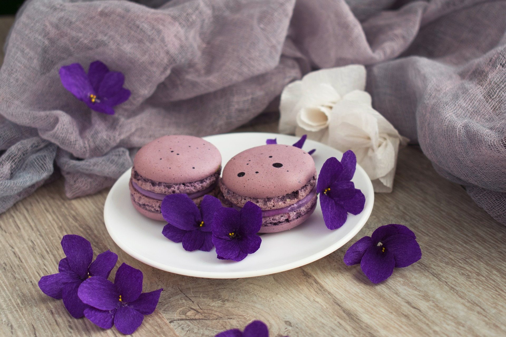
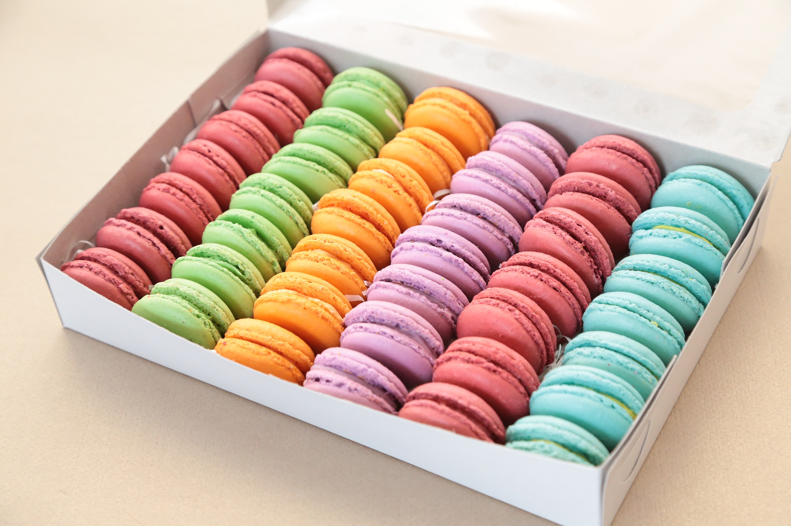

Elegantit macaronsit

Nämä kauniit, mutta haastavat leivonnaiset sopivat hieman kokeneemmalle leipurille. Ohjetta täytyy noudattaa säntillisesti ja tarkkuus on valttia jokaisessa leivontavaiheessa. Näiden tekemiseen kannattaa varata niin aikaa kuin hermojakin. Voi olla, että joudut tekemään muutaman "koe-erän" ennen kuin saat macaronseista yhtä täydellisiä kuin Pariisin kahviloissa. Mutta usko pois: onnistuneen lopputuloksen jälkeen haluat tehdä näitä uudelleen ja uudelleen...
Raaka-aineet (n. 80-100 kpl)
- 300 g tomusokeria
- 300 g mantelijauhoja
- 110 g valkuaista
- 30 g hienoa sokeria
- 300g hienoa sokeria
- 1 dl vettä
- 110 g valkuaista
- tippa pastaväriä
- tippa aromia
Valmistus
- Mittaa kaikki aineet tarkasti vaa'alla.
- Sekoita tomusokeri ja mantelijauhe. Mikäli mahdollista sekoita ne tehosekoittimessa tai siivilöi jotta saat ne tasaiseksi.
- Vatkaa ensimmäiset valkuaiset yleiskoneella vaahdoksi lisäten 30 g sokeria pikkuhiljaa sekaan. Vatkaa marenkia kunnes vaahto muodostaa huippuja.
- Keitä 300 g sokeria ja vettä, kunnes se on 110-120 asteista. Mittaa lämpömittarilla!
- Lisää sokeriliemi marengin joukkoon ohuena nauhana, koko ajan täydellä teholla vatkaten. Vatkaa kunnes marenki on 37-40 asteista. Jätä sivuun odottamaan.
- Erottele nyt toiset valkuaiset kulhoon ja lisää väriaine. Sekoita tasaiseksi, mutta älä vatkaa.
- Lisää tämä valkuaisseos manteli-tomusokeriseokseen ja sekoita tasaiseksi.
- Lisää italialaista marenkia (eli sitä mikä lämmitettiin) seokseen kolmessa erässä.
- Sekoita taikina kunnolla tasaiseksi nuolijalla varovasti käännellen mutta älä sekoita liikaa!
- Kääntele varovasti taikinaa niin kauan, kunnes tehdessäsi kuvion taikinan pinnalle, se laskeutuu hitaasti.
- Laita taikina pursotinpussiin, jossa on pyöreä tylla. Pursota leivinpaperin päälle pyöreitä leivoksia tasaisin välein.
- Kopauta lopuksi pelti kovasti pöydän pintaan, jotta ilmakuplat häviävät.
- Anna leivosten kovettua pellillä n. 30-60 minuuttia ennen paistoa. Leivokset ovat paistovalmiit, kun voit kokeilla varovasti sormella pintaa eikä sormeen jää mitään.
- Paista leivoksia uunin alatasolla kiertoilmassa 140 asteessa n. 13-15 minuuttia tai 150 asteessa ylä- tai alalämmöllä.
- Tarkkaile leivoksia paiston aikana jatkuvasti, niiden ei kuulu ruskistua paiston aikana! Vähennä tarvittaessa lämpötilaa.
- Anna leivosten jäähtyä ennen täyttämistä. Kuoret voi myös pakastaa myöhempää käyttöä varten.
Macaronsit voi täyttää esimerkiksi hillolla, suklaaganachella, nutellalla tai maustetulla voikreemillä. Voikreemin ohjeeseen pääset tästä.


